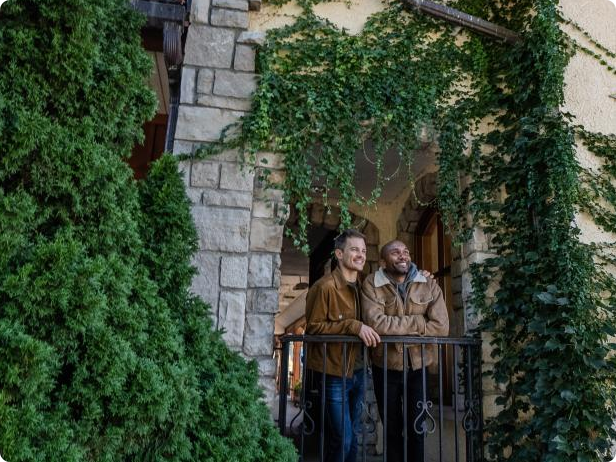
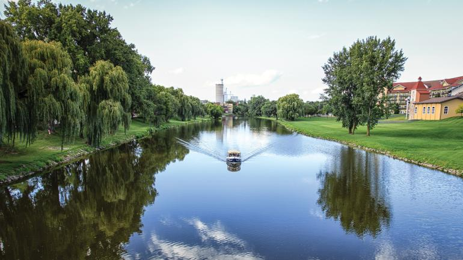
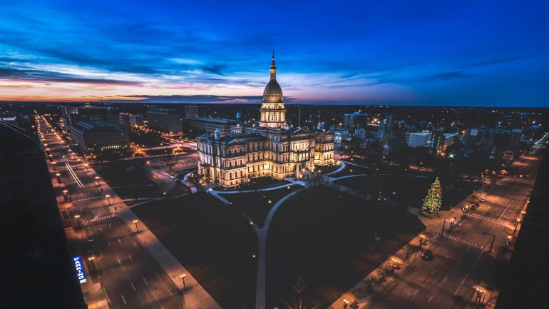

<!DOCTYPE html>
<html lang="en">
<head>
    <meta charset="UTF-8">
    <meta http-equiv="X-UA-Compatible" content="IE=edge">
    <meta name="viewport" content="width=device-width, initial-scale=1.0">
    <title>go USA</title>
    <script src="https://code.jquery.com/jquery-latest.min.js"></script>
    <script src="js/jquery.bxslider.js"></script>
    <script src="js/jquery.fitvids.js"></script>
    <script src="js/gousa.js"></script>
    <link rel="stylesheet" href="css/import.css">
</head>
<body class="subBG">
    <div id="sitemapPanel">
        <div>
            <h2>SITE MAP</h2>
            <input type="button" value="panelClose" class="btn_close">
            <ul>
                <li><a href="https://www.thebrandusa.com/press?tab-order=0" target="_blank">미디어 관련 문의</a></li>
                <li><a href="call.html">연락하기</a></li>
                <li><a href="Terms_of_Use.html">이용약관</a></li>
                <li><a href="usa_travels.html">미국 여행 정보</a></li>
                <li><a href="ask_for.html">자주 묻는 질문</a></li>
                <li><a href="https://www.thebrandusa.com/" target="_blank">brand usa</a></li>
            </ul>
        </div>
   </div>
   <header id="top">
        <h1>
            <a href="index.html">
                
            </a>
        </h1>
        <nav>
            <ul>
                <li><a href="destination.html">목적지</a></li>
                <li><a href="travel.html">여행</a></li>
                <li><a href="experience.html">체험</a></li>
                <li><input type="button" value="apps" class="material-icons" data-panel="sitemapPanel"></li>
            </ul>
        </nav>
   </header>
   <!-- header fin -->
   <section class="loadMapContainer">
        <div>
            <h2>
                미시간주 로드 트립: 오대호의 주에서 만나는 자연, 역사, 문화<br>
                <cite>글쓴이:Keely Parker</cite>
            </h2>
            
        </div> 
        <!-- main fin -->
        <div class="centerbox">
            <h3>호기심이 많은 여행자라면 독특한 문화 허브, 매력적인 역사적 장소, 
                숨 막히게 아름다운 자연의 경이로움을 미시간주에서 만날 수 있습니다.</h3>
            <p>
                흥미진진한 이야기가 가득한 호숫가 도시에서 미국의 과거를 알아보세요. 주립공원과 보존지가 선사하는 잊지 못할 경관의 자연과 하나가 되어 보세요. 독특한 도시의 라이브 음악과 전경을 발견하세요. 
                미시간주는 어떤 여행객의 상상도 뛰어넘는 즐거움을 선사할 보물로 가득합니다. 
                이 주에서 로드 트립을 즐긴다면 눈을 크게 뜨고 새로운 경험을 즐기고, 여행 중 만나는 친절한 현지인과 꼭 대화를 나누어 보세요. 
                미시간주의 풍부한 역사와 자연의 아름다움에 매료되어 평생 남을 기억을 간직하게 될 것입니다.
            </p>
        </div>
        <!-- fin -->
        <ul class="floatBox">
            <li class="limgRtxt">
                <figure>
                    
                    <figcaption>
                        <h3>
                            마켓: 해양의 스릴과 현대적 매력
                        </h3>
                        <p>
                            마켓 소여 리저널 공항(Marquette Sawyer Regional Airport)에 날아가 렌터카를 픽업하고 
                            북쪽으로 27km를 달리면 호숫가 소도시인 마켓이 나옵니다. 캐나다에서 방문하는 경우 차로 
                            국경 다리만 넘으면 바로 미시간주가 나옵니다. 첫 번째 목적지는 마켓 하버 등대(Marquette Ha
                            rbor Lighthouse)로, 1853년부터 마켓을 내려다보는 인상적인 기념물입니다. 등대를 둘러싼 
                            푸르른 땅을 둘러본 다음 다리를 끝까지 걸어 올라가면 등대로 들어갈 수 있습니다. 그곳에서 마
                            켓 해양 박물관(Marquette Maritime Museum)의 매력 넘치는 전시물을 꼭 관람해 보세요. 등
                            대에서 자동차로 10분 거리인 프레스크아일 공원(Presque Isle Park)에서 탁 트인 슈피리어호
                            (Lake Superior) 전경을 공원의 수많은 전망 포인트에서 감상하세요. 현지인은 프레스크아일을 
                            감상하는 가장 좋은 방법이 바이크를 타고 페달을 밟아 피터 화이트 드라이브(Peter White Dri
                            ve)를 달리며 공원 주변을 따라 경치를 즐기는 것임을 압니다. 길을 따라가다가 블랙록(Black 
                            Rocks)이라는 고대 절벽 지형 근처에 멈춰보세요.
                        </p>
                    </figcaption>
                </figure>
                <div>
                    <h4>추천 즐길 거리</h4>
                    <mark>Michigan</mark>
                    <a href="anchorage.html">
                        
                        <b>여행</b>
                        <small>미시간주 마켓: 대자연의 경이로운 풍경</small>
                    </a>
                    <div class="circlebox">
                        <b class="car">
                            자동차로 2.75시간</b>
                        <b class="speed">264km</b>
                    </div>
                </div>
            </li>
            <li class="ltxtRimg">
                <figure>
                    
                    <figcaption>
                        <h3>
                            수세인트 마리: '수' 탐험
                        </h3>
                        <p>
                            자동차에 올라타 동쪽으로 이동하면 다음 목적지인 수세인트마리가 있습니다. 미시간
                            주의 첫 도시인 수세인트 마리는 수 락스(Soo Locks)로 가장 유명할 겁니다. 인간이 
                            만든 수로 체계를 통해 선박이 슈피리어호와 휴런호(Lake Huron) 사이를 오갑니다. 
                            프랑스와 북미 원주민의 영향 덕분에 이 이야기가 가득한 무역 거점에 다양하고 다채
                            로운 매력이 더해졌습니다. 타운에 도착한 뒤 잠시 차를 타고 가거나 수상 비행기를 타
                            고 로터리 아일랜드 파크(Rotary Island Park)로 이동하면 세인트 메리스강(St. Mar
                            y’s River)에서 카약이나 낚시를 즐길 수 있습니다. 꼬마 낚시꾼도 환영입니다. 공원에
                            는 어린이용 낚시 연못도 있습니다. 입맛이 돌면 수 브루잉 컴퍼니(Soo Brewing 
                            Company)와 1668 와이너리(1668 Winery)를 방문해보세요. 역사적인 포티지 애비
                            뉴(Portage Avenue)의 아늑하고 예스러운 곳에 자리한 미식가를 위한 두 보석입니다현지에서 잡은 화이트피쉬 딥 같은 간단한 안주를 곁들여 하우스에서 브루잉한 에일과 
                            와인을 즐겨보세요. 물가를 노닐며 오후를 보낸 뒤 앨버타 하우스 아트 센터(Alberta 
                            House Arts Center)에서 현지 예술을 감상하고 워터 스트리트(Water Street)를 
                            따라 뮤지션이 연주하는 음악을 감상해 보세요.
                        </p>
                    </figcaption>
                </figure>
                <div>
                    <mark>Michigan</mark>
                    <h4>추천 즐길 거리</h4>
                    <a href="Anchorage.html">
                        
                        <b>체험</b>
                        <small>야외 활동의 낙원, 미시간주 수세인트마리: 물놀이를 즐기는 3가지 방법</small>
                    </a>
                    <div class="circlebox">
                        <b class="car">자동차로 2.5시간</b>
                        <b class="speed">211km</b>
                    </div>
                </div>
            </li>
            <li class="limgRtxt">
                <figure>
                    
                    <figcaption>
                        <h3>
                            프랑켄머스: 바바리안 전통 맛보기
                        </h3>
                        <p>
                            프랑켄머스 는 독일 선교사가 1845년 처음 정착한 곳입니다. 그 영향은 소도시 전체
                            를 장식하는 바바리안 건축물을 통해 여전히 느낄 수 있습니다. 브로너스 크리스마스 
                            원더랜드(Bronner’s CHRISTmas Wonderland)에 방문해 홀리데이를 즐기며 휴
                            가를 시작하세요. 크리스마스 장식만을 판매하는 세계에서 가장 큰 상점입니다. 프로
                            그램 센터에서 지도를 받고 비디오 안내로 상점의 역사를 시청한 다음, 반짝이는 수
                            많은 시즌 장식으로 가득한 축제 분위기 속 매대 통로를 둘러보며 시간을 보내세요.
                            소도시 중심으로 이동하면 메인 스트리트(Main Street)의 장엄한 알파인 건축물 
                            사이에 자리한 방문자 센터가 있습니다. 꽃이 늘어선 거리를 따라 걸어오면 독특한 
                            상점, 장인의 부티크가 가득합니다. 역사 박물관(Historical Museum)에서 기억에 
                            남는 투어를 할 수도 있습니다. 리버 플레이스 숍스(River Place Shops)를 둘러보며 
                            시간을 보내고, 페달 트롤리나 진짜 말이 끄는 마차를 타고 투어를 해보세요. 간식을 
                            집어들고 수많은 야외 다이닝 중 한 곳을 골라 매력 넘치는 점심을 즐긴 뒤 바바리안 
                            벨 리버보트(Bavarian Belle Riverboat)나 프랑켄머스 펀 쉽스(Frankenmuth 
                            Fun Ships)의 크루즈를 타고 독특한 지점에서 소도지를 바라보세요.
                        </p>
                    </figcaption>
                </figure>
                <div>
                    <mark>Michigan</mark>
                    <h4>추천 즐길 거리</h4>
                    <a href="alaskaNative.html">
                        
                        <b>체험</b>
                        미시간주 프랑켄머스: 미국의 작은 바이에른을 탐험하는 3가지 방법
                    </a>
                    <div class="circlebox">
                        <b class="car">비행기로 1.5시간</b>
                        <b class="speed">500km</b>
                    </div>
                </div>
            </li>
            <li class="ltxtRimg">
                <figure>
                    
                    <figcaption>
                        <h3>
                            디트로이트: 대도시의 분위기를 만끽하세요
                        </h3>
                        <p>
                            마지막으로 미시간주 대도시 디트로이트로 향합니다. 이 대도시에서도 잠시 머물러 
                            자연과 역사를 감상할 조용한 곳이 많습니다. 도시 중심에 있는 벨 아일 공원(Belle Isl
                            e Park)은 디트로이트강(Detroit River) 바로 옆에 보존된 자연이 펼쳐진 곳입니다. 
                            날씨가 충분히 따스하다면 수영이 가능한 해변에서 몸을 담그거나 공원의 대형 슬라이
                            드를 타보세요. 공원에서 가장 아름다운 곳은 벨 아일 아쿠아리움(Belle Isle Aquariu
                            m)입니다. 안으로 들어가 화려한 아치 입구를 지나가면 전 세계의 수중 동물을 관찰
                            하며 눈부시게 아름다운 오팔빛 유리로 장식된 벽을 볼 수 있습니다. 다음으로 디트로
                            이트의 과거로 여행을 떠납니다. 한때 포드 모델 T가 탄생한 포드 피켓 애비뉴 공장
                            (Ford Piquette Avenue Plant)은 더는 자동차를 제조하지는 않으나, 역사적 장소로
                            서 자동차 산업의 중심지였던 시절을 엿볼 수 있습니다. 가이드 투어를 따라 미시간주
                            에서 생산된 고풍스러운 수많은 차량과 함께하는 자동차 산업 역사 여행을 떠나보세요
                            디트로이트 다운타운의 중심에서 저녁과 공연을 즐기면 미시간주에서 보내는 마지막
                             밤을 화려하게 장식할 수 있습니다. 역사적인 고층빌딩을 장식한 거대한 벽화를 충분
                            히 감상한 뒤 클리프 벨스(Cliff Bell’s)의 보헤미안 스타일 다이닝 룸에 들어가 보세요. 
                            한때 주류 밀매점이었던 이곳에서 1940년대 장식과 재즈 뮤지션이 선사하는 밤 공연
                            이 호화로운 앙트레와 맞춤 칵테일의 맛을 더해줄 것입니다. 디트로이트 메트로폴리탄 
                            공항(Detroit Metropolitan Airport)을 떠나는 항공편에 올라타거나, 차를 타고 국경 
                            다리를 건너 집으로 돌아가며 할 이야기가 아주 많을 것입니다.
                        </p>
                    </figcaption>
                </figure>
            </li>
        </ul>
        <!-- fin -->
        <div class="moreBox">
            <h3>더 알아보기</h3>
            <ul>
                <li>
                    <a href="michigan_Frankenmuth.html">
                        체험
                        <b>미시간주 그랜드래피즈: 작은 마을의 매력
                            을 만끽하는 소도시 여행</b>
                    </a>
                </li>
                <li>
                    <a href=" TraverseCity.html">
                        목적지
                        <b>트래버스 시티</b>
                    </a>
                </li>
                <li>
                    <a href="michigan_motercity.html">
                        목적지
                        <b>랜싱</b>
                    </a>
                </li>
                <li>
                    <a href="michigan_Frankenmuth.html">
                        목적지
                        <b>프랑켄머스</b>
                    </a>
                </li>
                <li>
                    <a href="Kalamazoo.html">
                        목적지
                        <b>칼라마주</b>
                    </a>
                </li>
                <li>
                    <a href="michigan_motercity.html">
                        목적지
                        <b>베이시티</b>
                    </a>
                </li>
            </ul>
            <!-- 더 보기  -->
        </div>
        <div class="websitebox">
            <h3>미시간주 공식 여행 웹사이트</h3>
            <a href="https://www.michigan.org/" target="_blank">
                퓨어 미시간 </a>
            <a href="usa_travels.html">
                미국 여행 정보 </a>
            <!-- 공식 웹사이트 -->
        </div>
        <a href="list_Michigan.html" class="btn_before">이전으로</a>
   </section>
   <!-- content fin -->
   <footer>
    <a href="#">위로가기</a>
        <div>
            <h2>
                
            </h2>
            <p>copyright</p>
            <a href="https://play.google.com/store/apps/details?id=com.fexy.gousatv&pcampaignid=MKT-Other-global-all-co-prtnr-py-PartBadge-Mar2515-1">googlePlay</a>
            <a href="https://apps.apple.com/us/app/gousa-tv/id1434602122">appStore</a>
        </div>
        <div>
            <ul>
                <li><a href="https://www.thebrandusa.com/" target="_blank">brand usa</a></li>
                 <li><a href="https://www.thebrandusa.com/press?tab-order=0" target="_blank">미디어 관련 문의</a></li>
                <li><a href="call.html">연락하기</a></li>
                <li><a href="userName.html">여행기획</a></li>
                <li><a href="Terms_of_Use.html">자주 묻는 질문</a></li>
            </ul>
   <a href="https://mp.mydigitalpublication.com/publication/?i=756559&p=&pn=" target="_blank">최신 Go USA가이드를 읽고 여행을 계획해보세요.</a>
            <a href="https://www.gousa.or.kr/unitedstories" target="_blank">미국 여행 플래너로 맞춤형 여정을 만드세요.</a>
        </div>
   </footer>
</body>
</html>